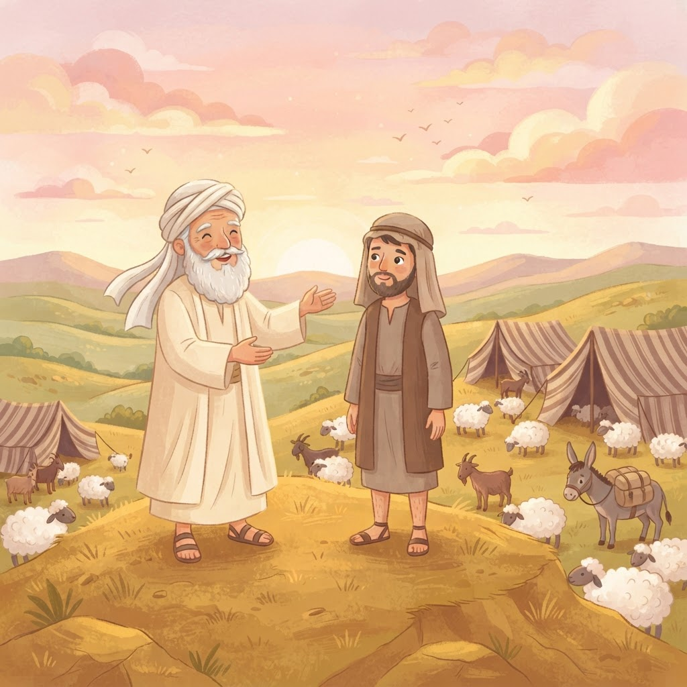

הפעם יש לנו שני אחים — ושתי דרכים שונות לגמרי…
📖 הסיפור של השבוע
שלום ילדים חמודים! היום יש לנו סיפור על שני אחים — תאומים. תאומים זה אומר שנולדו באותו יום, כמעט באותו רגע. אבל אתם יודעים מה? גם תאומים יכולים להיות שונים לגמרי אחד מהשני.
יצחק ורבקה חיכו הרבה מאוד זמן לילדים. הם התפללו, וביקשו, וחיכו — עד שנולדו להם שני בנים. הראשון יצא ראשון, ושמו עשיו. והשני יצא אחריו, ושמו יעקב.
ככה מספרת לנו התורה: "ויגדלו הנערים, ויהי עשיו איש יודע ציד, איש שדה, ויעקב איש תם יושב אוהלים".
שימו לב לשתי התמונות האלה. עשיו — איש יודע ציד, איש שדה. הוא אוהב להיות בחוץ, לרוץ, לרדוף, לירות בקשת, לריח של האדמה והעשב. ויעקב — איש תם, יושב אוהלים. הוא אוהב להיות בבית, ללמוד, לחשוב, לשבת עם אבא ואמא.
אז מי מהם טוב יותר? תגידו לי אתם. אני אגלה לכם סוד: התורה לא אומרת. התורה רק מספרת שהם היו שונים. וזה בדיוק העניין — שני אחים, שני עולמות, ואף אחד מהם לא טעות.
ויצחק אהב את עשיו, כי הציד היה בפיו — היה לו מה לספר על היום שלו בשדה. ורבקה אהבה את יעקב, שישב איתה באוהל ולמד.
ויהי יום אחד, ועשיו חוזר מהשדה עייף ורעב. הוא מריח ריח נורא טוב. מה זה? יעקב מבשל! מה הוא מבשל? עדשים! מרק עדשים אדום, חם, עם ריח שממלא את כל הבית.
עשיו אומר: "הלעיטני נא מן האדום האדום הזה" — תביא לי בבקשה מהאדום הזה, אני כל כך רעב! ואז קורה משהו שקשה להבין: עשיו מוכר את הבכורה שלו ליעקב, בשביל קערת מרק.
וככה זה נשמע בתורה: "ויאמר עשיו, הנה אנכי הולך למות, ולמה זה לי בכורה".
בכורה זה אומר להיות הראשון — זה תפקיד עם אחריות. ומה שעצוב כאן הוא לא המרק. מה שעצוב הוא שעשיו היה כל כך עייף ורעב, שהוא לא עצר רגע לשאול: "רגע, מה אני עומד לעשות?" הוא היה עסוק במה שיש לו עכשיו, ולא חשב על מה שיהיה אחר כך.
ואחר כך, כשאבינו יצחק הזדקן, הוא ביקש מעשיו לצוד לו ואז לברך אותו. ורבקה אמרה ליעקב: תלך, תביא, ותקבל את הברכה. ויעקב בא, עם בגדים של עשיו ועם עורות של גדי על הידיים, ויצחק אמר: "הקול קול יעקב, והידיים ידי עשיו" — ונתן לו את הברכה.
וכשעשיו גילה מה קרה, הוא בכה בכי גדול ומר. וזו נקודה שחשוב להרגיש אותה: לפעמים אנחנו עושים משהו בהיסח הדעת, וזה נשאר איתנו הרבה יותר מדי זמן. עשיו לא היה אדם רע. הוא פשוט מיהר, ולא שם לב למה שהוא נותן.
ויעקב? יעקב גם לא היה מושלם. הוא הקדים את אח שלו, ועל זה הוא שילם — שנים של פחד ושל בריחה, שנים של געגוע הביתה.
אז מה למדנו? שיש אנשים שאוהבים שדה ויש אנשים שאוהבים אוהל. שיש מי שדומה לאבא ומי שדומה לאמא. ושההבדל ביניהם הוא לא "טוב" ו"רע" — אלא מה כל אחד מכם עושה עם מה שיש לו.
ובשבוע הבא נפגוש את יעקב בדרך, רחוק מהבית, ונראה מי הוא באמת.
להתראות, ילדים חמודים, ולילה טוב.
🎁 מה מקבלים כל שבוע?
🕯️ שאלות לשולחן שבת
אחרי הסיפור — תנו לילדים במה להרשים את המשפחה:
- עשיו אוהב שדה ויעקב אוהב אוהל. מה כל אחד מהם יכול ללמוד מהשני?
- עשיו מכר את הבכורה כשהיה עייף ורעב. למה לא כדאי להחליט החלטות כשרעבים או עייפים?
- בבית שלכם — מי יותר דומה לשדה ומי יותר דומה לאוהל? ואיך זה יכול דווקא לעזור?
👨👩👧 להורים — מה עושים עם זה השבוע
ארבעה רעיונות קצרים מהבית, בלי הכנה מראש:
- תאומים במשפחה. שאלו את הילדים: מי במשפחה שלנו דומה למי? יש תאומים במשפחה המורחבת? אפשר לספר שגם תאומים שנולדו באותו יום יכולים להיות שונים לגמרי — וזה בסדר.
- דבר והיפוכו. המשחק של הפרשה: איש ציד ↔ יושב אוהלים, שעיר ↔ חלק, שדה ↔ אוהל. כל אחד אומר זוג ניגודים, והשני מסביר למה שניהם טובים בדרכם. זה גם משחק לשוני — ומשם אפשר להמשיך לכל מילה והיפוכה.
- מרק עדשים. מבשלים יחד מרק עדשים אדום, כמו זה שעשיו הריח. בזמן שהסיר על האש שואלים: "מה היית נותן בשביל משהו שכרגע ממש בא לך?"
- חימר ועדשים. מכינים קערית מחימר ומדביקים לתוכה עדשים יבשות. עובד יפה, מחזיק 20 דקות שקט, ויוצא כלי שאפשר לשמור.
💡 נקודה לשיחה: עדשים הן קטניות, ועשירות בחלבון — אוכל פשוט שמשביע מאוד. אפשר להראות לילדים שדווקא מה שנראה "פשוט" הוא זה שנותן כוח.
💡 ונקודה חשובה: הפרשה לא אומרת שאחד האחים טוב והשני רע. בבית שלכם, הילד ה"שונה" הוא לא ה"פחות טוב".
"הילדים מחכים לסיפור כל שבוע. הליכה לישון הפכה לזמן שהם הכי אוהבים."
🎈 משחק לסוף הפרשה
בפרשה יש דבר והיפוכו בכל מקום. לחצו ותגלו את ההיפך 🎈
🎁 בוחרים תוכנית
כל התוכניות כוללות: סיפור לכל פרשה + שאלות לשולחן שבת + קבוצת הוואטסאפ
💫 שנעים להכיר אותי
כאן יופיע כרטיס הביקור האישי של המספרת: מי אני, מה אני מביאה, מהילדות שלי ומה עשיתי — הסיפור האמיתי שמאחורי המספרת.
ולמה בעצם סיפורים? כי סיפור טוב לא רק מבדר — הוא נוגע בלב ונשאר שם לשנים. וכשילד מקשיב בעיניים נוצצות, קורה שם משהו גדול.

Dream it. Plan it. Achieve it.